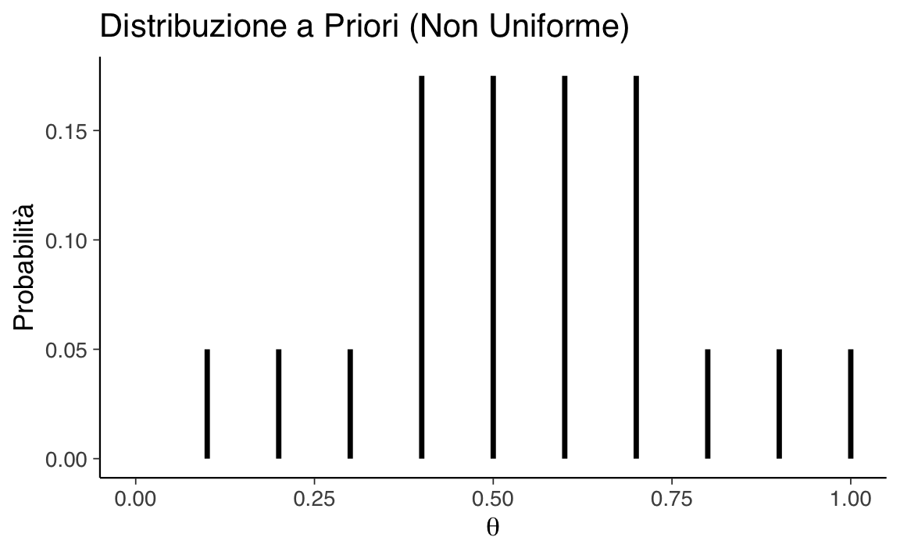
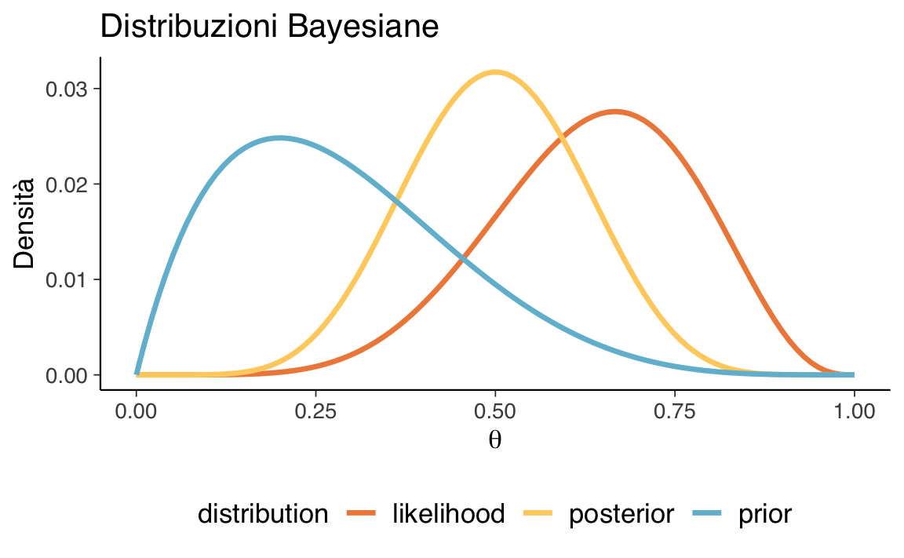

here::here("code", "_common.R") |>
source()
# Load packages
if (!requireNamespace("pacman")) install.packages("pacman")
pacman::p_load(HDInterval)41 Pensare ad una proporzione in termini soggettivi
In questo capitolo imparerai a
- applicare l’aggiornamento bayesiano per affinare credenze;
- rappresentare distribuzioni a priori (discrete e continue);
- calcolare la verosimiglianza e aggiornare la distribuzione a priori;
- derivare e interpretare la distribuzione a posteriori;
- usare il metodo a griglia per approssimare la distribuzione a posteriori;
- applicare il modello binomiale per stimare probabilità e incertezze;
- calcolare medie, mode e intervalli di credibilità;
- utilizzare la distribuzione Beta come prior continuo.
Prerequisiti
- Leggere il settimo capitolo del testo di Albert & Hu (2019).
Preparazione del Notebook
41.1 Introduzione
L’unica cosa rilevante è l’incertezza – il grado della nostra conoscenza e ignoranza. Il fatto che gli eventi considerati siano in qualche modo determinati, o conosciuti da altre persone, non ha alcuna importanza (Bruno deFinetti).
L’inferenza bayesiana è un metodo di inferenza statistica che utilizza la probabilità per aggiornare le credenze sui parametri di un modello, sulla base di nuove evidenze o dati osservati. Essa fornisce un quadro concettuale per stimare variabili sconosciute, tenendo conto dell’incertezza. Attraverso un modello che descrive le dipendenze tra variabili aleatorie, la teoria della probabilità può essere impiegata per inferire tutte le quantità sconosciute. In questo approccio, tutte le incertezze, sia nelle osservazioni che nei parametri del modello, sono trattate come distribuzioni di probabilità.
In sintesi, l’inferenza bayesiana è il processo di deduzione delle proprietà di una distribuzione di probabilità a partire dai dati, utilizzando il teorema di Bayes. Questo processo incorpora l’idea che la probabilità rappresenti una misura della fiducia su una previsione o un risultato.
Questo capitolo ha lo scopo di esplorare in dettaglio il concetto di aggiornamento bayesiano, illustrandolo con un esempio concreto in un contesto semplificato. L’obiettivo è dimostrare come le credenze preesistenti sulla probabilità di un parametro \(\theta\) possano essere aggiornate attraverso l’osservazione di nuovi dati.
Il primo passo nell’inferenza bayesiana consiste nel rappresentare le credenze iniziali, formulate prima di raccogliere i dati, tramite una distribuzione a priori. La distribuzione a priori riflette le nostre conoscenze o ipotesi preesistenti su \(\theta\) e può variare in base al contesto o alle informazioni pregresse disponibili.
Una volta ottenuti nuovi dati, il passaggio successivo è l’aggiornamento delle credenze tramite la distribuzione a posteriori. Questo aggiornamento si ottiene moltiplicando la distribuzione a priori per la verosimiglianza dei dati osservati, il che riflette quanto i dati supportino un determinato valore di \(\theta\). Il prodotto di questi due termini fornisce una misura delle credenze aggiornate, che viene successivamente normalizzata per garantire che il risultato sia una distribuzione di probabilità valida (ovvero, che l’area sotto la curva sia pari a 1).
Il capitolo si concentra sul modello binomiale. Questo modello è utilizzato per stimare una proporzione sconosciuta basata su una serie di dati binari \(y_1, \ldots, y_n\), ciascuno dei quali può assumere valore 0 o 1.
Inizieremo esplorando un esempio in cui la distribuzione a priori di \(\theta\) è discreta, un caso in cui i valori possibili di \(\theta\) sono limitati a un insieme finito di opzioni. Successivamente, discuteremo scenari in cui la distribuzione a priori è continua, ampliando il modello per affrontare casi più complessi e realistici. Questo approccio progressivo consente di acquisire una comprensione graduale dei concetti centrali dell’inferenza bayesiana e del loro utilizzo pratico nel contesto di problemi statistici reali.
41.2 Verosimiglianza Binomiale
La distribuzione binomiale offre un modello naturale per dati che derivano da una sequenza di \(n\) prove indipendenti e identicamente distribuite, dove ciascuna prova dà origine a uno dei due possibili esiti, convenzionalmente etichettati come ‘successo’ e ‘fallimento’. Grazie al fatto che le prove sono iid, i dati possono essere riassunti dal numero totale di successi nelle \(n\) prove, che denotiamo con \(y\). Il parametro \(\theta\) rappresenta la proporzione di successi nella popolazione o, equivalentemente, la probabilità di successo in ciascuna prova. Il modello di campionamento binomiale è:
\[ p(y \mid \theta) = \text{Bin}(y \mid n, \theta) = \binom{n}{y} \theta^y (1 - \theta)^{n-y}, \]
dove nella parte sinistra dell’equazione non si indica la dipendenza da \(n\) perché viene considerato parte del disegno sperimentale e fissato; tutte le probabilità discusse per questo problema sono considerate condizionate su \(n\), cioè assumono che il numero totale di prove sia fissato e noto.
41.3 Applicazione Specifica del Modello Binomiale
In questo capitolo, esaminiamo un’applicazione specifica del modello binomiale per valutare la prestazione di un partecipante in un classico esperimento di psicologia, noto come Go/No-Go task (Shiffrin & Schneider, 1977). In questo tipo di compito, ai partecipanti viene richiesto di rispondere a determinati stimoli (prove Go) e di trattenere la risposta ad altri stimoli (prove No-Go). Ad esempio, i partecipanti possono vedere una serie di lettere presentate su uno schermo e devono premere un pulsante quando vedono qualsiasi lettera tranne una specifica lettera bersaglio (ad esempio, la lettera “X”). In questo esperimento, ogni prova rappresenta un evento di tipo bernoulliano con due possibili esiti: o il partecipante risponde correttamente o commette un errore. I ricercatori analizzano la percentuale di risposte corrette e di inibizioni, concentrandosi in particolare sulla capacità del partecipante di controllare l’impulso di rispondere durante le prove No-Go.
Consideriamo un piccolo numero di prove No-Go di un partecipante, dove i risultati sono: 1, 0, 1, 1, 1, 0, 1, 0, 1. Qui, il valore “1” indica che il partecipante è stato in grado di inibire la risposta, mentre “0” indica che non è riuscito a farlo. L’obiettivo dell’analisi è quantificare l’incertezza nella stima di \(\theta\), che rappresenta la proporzione di risposte corrette nel compito No-Go, ovvero la capacità inibitoria del partecipante.
Consideriamo questi dati come una sequenza di 9 prove bernoulliane indipendenti. Utilizzando il modello binomiale, stimiamo la probabilità \(\theta\) che il partecipante riesca a controllare il proprio impulso di rispondere durante le prove No-Go e quantifichiamo l’incertezza associata a questa stima.
41.3.1 Flusso di Lavoro Bayesiano
McElreath (2020) descrive il flusso di lavoro bayesiano attraverso una serie di passaggi chiari e ben definiti. Ecco una spiegazione semplificata ma formale, adatta per studenti universitari senza esperienza precedente nell’ambito.
-
Definizione di un Modello Generativo per i Dati
Un modello generativo rappresenta il processo attraverso cui i dati vengono prodotti. Per esempio, nel caso di un compito No-Go, ogni prova può essere considerata come un esperimento di tipo Bernoulli, che può produrre due possibili risultati:-
Successo: inibizione della risposta corretta (rappresentata da 1).
- Errore: mancata inibizione della risposta (rappresentata da 0).
Denotiamo con \(\theta\) la probabilità di inibire correttamente la risposta. Il modello generativo è quindi formalizzato come:
\[ X_i \sim \text{Bernoulli}(\theta), \]
dove \(i = 1, 2, \dots, 9\) indica le prove eseguite, e \(X_i\) rappresenta l’esito di ciascuna prova.
-
Successo: inibizione della risposta corretta (rappresentata da 1).
-
Definizione di uno Stimatore per il Parametro di Interesse
Lo stimatore è uno strumento che ci permette di calcolare una stima del parametro di interesse (in questo caso \(\theta\)) basandoci sui dati raccolti.-
\(\theta\) rappresenta la probabilità di successo, ovvero di inibire correttamente la risposta.
- Oltre a stimare \(\theta\), è importante quantificare l’incertezza della stima utilizzando i dati a disposizione.
-
\(\theta\) rappresenta la probabilità di successo, ovvero di inibire correttamente la risposta.
-
Sviluppo di un Metodo Statistico per la Stima di \(\theta\)
Utilizziamo un approccio bayesiano per stimare \(\theta\). Questo approccio combina:-
Una distribuzione a priori: rappresenta le convinzioni iniziali su \(\theta\). Scegliamo una distribuzione Beta \(\text{Beta}(1, 1)\), che corrisponde a una distribuzione uniforme, per indicare che non abbiamo informazioni iniziali preferenziali.
-
La verosimiglianza: rappresenta quanto i dati osservati siano compatibili con diversi valori di \(\theta\). Per 6 successi e 3 errori, la verosimiglianza è data da una distribuzione binomiale:
\[ L(\theta) = {9 \choose 6} \theta^{6} (1-\theta)^{3}. \] -
La distribuzione a posteriori: si ottiene aggiornando la distribuzione a priori con i dati osservati, tramite il teorema di Bayes:
\[ \text{Posteriore} \propto \text{Verosimiglianza} \times \text{Priori}. \]
-
Una distribuzione a priori: rappresenta le convinzioni iniziali su \(\theta\). Scegliamo una distribuzione Beta \(\text{Beta}(1, 1)\), che corrisponde a una distribuzione uniforme, per indicare che non abbiamo informazioni iniziali preferenziali.
-
Validazione del Modello Tramite Simulazioni
Prima di applicare il modello ai dati reali, verifichiamo che il modello sia realistico attraverso:-
Simulazioni predittive a priori: servono per controllare se il modello è in grado di generare dati plausibili.
- Simulazioni predittive a posteriori: valutano se il modello, una volta adattato ai dati osservati, può riprodurre risultati simili a quelli effettivamente ottenuti.
-
Simulazioni predittive a priori: servono per controllare se il modello è in grado di generare dati plausibili.
-
Analisi e Sintesi dei Risultati
Una volta adattato il modello ai dati reali:- Utilizziamo metodi computazionali come il Monte Carlo a catene di Markov (MCMC) per calcolare la distribuzione a posteriori.
- Riassumiamo i risultati tramite statistiche descrittive, come media, mediana e intervalli di credibilità, per fare inferenze su \(\theta\).
- Utilizziamo metodi computazionali come il Monte Carlo a catene di Markov (MCMC) per calcolare la distribuzione a posteriori.
In questo capitolo, mostreremo come calcolare numericamente la distribuzione a posteriori di \(\theta\). Nei capitoli successivi esploreremo in dettaglio ogni fase del flusso di lavoro bayesiano descritto da McElreath (2020).
41.4 Metodo Basato su Griglia nell’Aggiornamento Bayesiano
Dopo aver discusso l’aggiornamento bayesiano e come permette di raffinare le nostre convinzioni preesistenti alla luce di nuove evidenze, esploreremo ora una tecnica specifica per realizzare questo aggiornamento: il metodo basato su griglia.
Il metodo basato su griglia è un approccio semplice e intuitivo per stimare la distribuzione a posteriori, particolarmente utile quando non sono disponibili soluzioni analitiche esatte o si desidera evitare l’uso di algoritmi computazionali complessi. La procedura si articola nei seguenti passi:
- Selezione di un intervallo per il parametro: Basandosi sulle convinzioni a priori, si definisce un intervallo ragionevole per il parametro di interesse.
- Creazione di una griglia di punti: Su questo intervallo, si distribuiscono una serie di punti, di solito equidistanti tra loro.
- Calcolo della posteriori per ogni punto: Per ogni punto della griglia, si moltiplica la verosimiglianza per il prior corrispondente.
- Normalizzazione dei risultati: Per garantire che la somma delle probabilità sia pari a 1, si normalizzano i valori ottenuti dividendo ciascun punto per l’area totale sottesa dalla curva della distribuzione a posteriori.
Attraverso questo metodo, si ottiene una rappresentazione approssimativa ma illustrativa della distribuzione a posteriori. Questo approccio offre un modo accessibile per visualizzare e comprendere il processo di aggiornamento bayesiano.
41.5 Aggiornamento Bayesiano con una Distribuzione a Priori Discreta
41.5.1 Distribuzione a priori
Quando non disponiamo di informazioni specifiche preliminari su \(\theta\), potremmo inizialmente assegnare un valore di 0.5, suggerendo una probabilità a priori uniforme tra le due alternative (la capacità di inibire la risposta e la mancanza di questa capacità in una prova del compito Go/No-Go). Tuttavia, questo valore non rappresenta adeguatamente l’intero spettro della nostra incertezza iniziale.
Per riflettere meglio questa incertezza, utilizziamo una distribuzione a priori discreta, che assegna una probabilità distinta a ciascun valore plausibile di \(\theta\). Questo approccio ci permette di quantificare le nostre convinzioni preliminari sulla distribuzione di questi valori.
Supponiamo di considerare undici possibili valori per \(\theta\), che variano da 0 a 1 con incrementi di 0.1. Possiamo attribuire a ciascun valore una probabilità a priori uguale, creando così una distribuzione uniforme, oppure scegliere una distribuzione non uniforme che meglio rifletta le nostre aspettative sui valori di \(\theta\) più probabili.
Dopo aver osservato i dati — nel nostro caso, 6 successi in 9 prove — applichiamo il teorema di Bayes per trasformare la distribuzione a priori in una distribuzione a posteriori. Questo processo consiste nel combinare la probabilità a priori di \(\theta\) con la verosimiglianza dei dati per produrre una probabilità a posteriori aggiornata per \(\theta\).
41.5.2 Distribuzione a Posteriori
La distribuzione a posteriori combina le informazioni a priori con i dati osservati, aggiornando le nostre credenze riguardo al parametro \(\theta\). Vediamo passo passo come implementare il calcolo della distribuzione a posteriori e delle relative quantità in R, partendo dalla rappresentazione discreta di \(\theta\).
41.5.2.1 1. Definizione di \(\theta\)
Iniziamo definendo un insieme discreto di valori per \(\theta\).
theta <- seq(0, 1, by = 0.1)
theta
#> [1] 0.0 0.1 0.2 0.3 0.4 0.5 0.6 0.7 0.8 0.9 1.041.5.2.2 2. Distribuzione a Priori Uniforme
Se non abbiamo motivi per preferire alcuni valori di \(\theta\), assegniamo probabilità uguali a tutti i valori, \(\theta \sim \mathcal{Uniform}(0, 1)\).
Standardizziamo la distribuzione affinché le probabilità si sommino a 1.
Verifichiamo.
sum(unif_prior) # Verifica che le probabilità sommino a 1
#> [1] 1Visualizziamo questa distribuzione a priori uniforme:
ggplot(data.frame(theta, unif_prior), aes(x = theta, y = unif_prior)) +
geom_segment(aes(xend = theta, yend = 0), linetype = "solid", linewidth = 1.2) +
labs(
title = "Distribuzione a Priori (Uniforme)",
x = expression(theta),
y = "Probabilità"
)
41.5.2.3 3. Distribuzione a Priori Non Uniforme
Se riteniamo più probabili i valori centrali di \(\theta\), definiamo una distribuzione a priori discreta non uniforme:
theta <- seq(0, 1, length.out = 11)
not_unif_prior <-
c(0, 0.05, 0.05, 0.05, 0.175, 0.175, 0.175, 0.175, 0.05, 0.05, 0.05)
data.frame(theta, not_unif_prior) |>
ggplot(
aes(x = theta, y = not_unif_prior)
) +
geom_segment(
aes(xend = theta, yend = 0),
linetype = "solid", linewidth = 1.2
) +
labs(
title = "Distribuzione a Priori (Non Uniforme)",
x = expression(theta),
y = "Probabilità"
)
sum(not_unif_prior) # Verifica che le probabilità sommino a 1
#> [1] 141.5.2.4 4. Calcolo della Verosimiglianza
La funzione di verosimiglianza per il modello binomiale, \(y \sim \mathcal{Binomial}(n, \theta)\), è definita in R nel modo seguente:
likelihood <- dbinom(6, size = 9, prob = theta)Normalizziamo.
likelihood <- likelihood / sum(likelihood) data.frame(theta, likelihood) |>
ggplot(
aes(x = theta, y = likelihood)
) +
geom_segment(
aes(xend = theta, yend = 0),
linetype = "solid", linewidth = 1.2
) +
labs(
title = "Funzione di Verosimiglianza",
x = expression(theta),
y = expression(L(theta))
)41.5.2.5 5. Distribuzione a Posteriori
La distribuzione a posteriori, \(Pr(\theta \mid y)\), si calcola moltiplicando elemento per elemento la distribuzione a priori e la verosimiglianza, quindi dividendo per la probabilità marginale dei dati (normalizzazione).
post_not_norm <- (not_unif_prior * likelihood)
print(post_not_norm)
#> [1] 0.00000000 0.00000306 0.00013754 0.00104951 0.01299717 0.02869228
#> [7] 0.04386543 0.04666454 0.00880231 0.00223060 0.00000000Normalizziamo.
Verifica che la distribuzione a posteriori sommi a 1.
sum(post)
#> [1] 1Visualizziamo la distribuzione a posteriori.
data.frame(theta, post) |>
ggplot(
aes(x = theta, y = post)
) +
geom_segment(
aes(xend = theta, yend = 0),
linetype = "solid", linewidth = 1.2
) +
labs(
title = "Distribuzione a Posteriori",
x = expression(theta),
y = expression(f(theta))
)
41.5.2.6 6. Quantità a Posteriori
- Media a Posteriori: Calcolata come il valore atteso di \(\theta\) sotto la distribuzione a posteriori.
posterior_mean <- sum(theta * post)
posterior_mean
#> [1] 0.6087- Varianza a Posteriori: Calcolata come la varianza della distribuzione a posteriori.
posterior_variance <- sum((theta^2) * post) - posterior_mean^2
posterior_variance
#> [1] 0.01338- Moda a Posteriori: Il valore di \(\theta\) con la probabilità più alta.
posterior_mode <- theta[which.max(post)]
posterior_mode
#> [1] 0.7In sintesi, abbiamo calcolato la distribuzione a posteriori di \(\theta\) utilizzando una distribuzione a priori discreta non uniforme e osservando 6 successi su 9 prove. Abbiamo derivato quantità statistiche come media, varianza e moda a posteriori. Questo processo dimostra come l’inferenza bayesiana aggiorni le credenze a priori in base ai dati osservati, offrendo una visione quantitativamente informata del parametro \(\theta\).
41.6 Aggiornamento Bayesiano con una Distribuzione a Priori Continua
Passiamo ora all’aggiornamento bayesiano utilizzando una distribuzione a priori continua, in particolare la distribuzione Beta. Questo approccio è particolarmente utile poiché consente di rappresentare \(\theta\) come una variabile continua definita nell’intervallo [0, 1].
41.6.1 Definizione della Distribuzione Beta
Iniziamo con una distribuzione Beta simmetrica, Beta(2, 2), e calcoliamo la sua densità di probabilità su un intervallo continuo di valori \(\theta\).
# Parametri della distribuzione Beta
alpha <- 2
beta <- 2
# Valori di theta
theta <- seq(0, 1, length.out = 1000)
# Densità di probabilità della distribuzione Beta
pdf <- dbeta(theta, alpha, beta)
# Grafico della distribuzione Beta
data.frame(theta, pdf) |>
ggplot(
aes(x = theta, y = pdf)
) +
geom_line(linewidth = 1.2) +
labs(
title = "Funzione di Densità di Probabilità Beta(2, 2)",
x = expression(theta),
y = "Densità"
)
41.6.2 Distribuzione a Priori Non Simmetrica
Consideriamo una distribuzione a priori non simmetrica, Beta(2, 5), per rappresentare credenze che privilegiano valori bassi di \(\theta\).
# Parametri della distribuzione Beta non simmetrica
alpha <- 2
beta <- 5
# Valori di theta e densità di probabilità
theta <- seq(0, 1, length.out = 100) # Valori di theta
pdf <- dbeta(theta, alpha, beta) # Densità di probabilità Beta(2, 5)
# Creazione del grafico
data.frame(theta, pdf) |>
ggplot(aes(x = theta, y = pdf)) +
geom_line(linewidth = 1.2) +
labs(
title = "Funzione di Densità di Probabilità Beta(2, 5)",
x = expression(theta),
y = "Densità"
)
41.6.3 Verosimiglianza
Consideriamo un esperimento con 9 prove e 6 successi, modellato con una distribuzione binomiale. Calcoliamo la funzione di verosimiglianza normalizzata.
# Parametri dell'esperimento
n <- 9
k <- 6
# Calcolo della verosimiglianza
likelihood <- dbinom(k, size = n, prob = theta)
likelihood <- likelihood / sum(likelihood) # Normalizzazione
# Grafico della verosimiglianza
data.frame(theta, likelihood) |>
ggplot(
aes(x = theta, y = likelihood)
) +
geom_line(linewidth = 1.2) +
labs(
title = "Funzione di Verosimiglianza",
x = expression(theta),
y = "Densità"
)
41.6.4 Distribuzione a Posteriori
La distribuzione a posteriori si ottiene moltiplicando la distribuzione a priori per la verosimiglianza e normalizzando il risultato.
# Uniamo tutti i dati in un dataframe per ggplot2
dat <- tibble(
theta,
prior,
likelihood,
posterior
)
# Preparazione dei dati per il plot
long_data <- dat |>
pivot_longer(
cols = c(prior, likelihood, posterior),
names_to = "distribution",
values_to = "density"
)
# Grafico
cols <- MetBrewer::met.brewer("Hiroshige", 4)
long_data |>
ggplot(aes(x = theta, y = density, color = distribution)) +
geom_line(size = 1.2) +
scale_color_manual(values = cols) +
labs(
title = "Distribuzioni Bayesiane",
x = expression(theta),
y = "Densità"
) +
theme(legend.position = "bottom")
41.6.5 Quantità a Posteriori
Calcoliamo alcune quantità riassuntive dalla distribuzione a posteriori.
- Media a Posteriori
posterior_mean <- sum(theta * posterior)
posterior_mean
#> [1] 0.5- Deviazione Standard a Posteriori
- Moda a Posteriori
posterior_mode <- theta[which.max(posterior)]
posterior_mode
#> [1] 0.494941.6.6 Campionamento dalla Distribuzione a Posteriori
Possiamo generare campioni casuali dalla distribuzione a posteriori per effettuare inferenze.
# Campionamento casuale basato sul posterior
set.seed(123)
samples <- sample(theta, size = 10000, prob = posterior, replace = TRUE)
# Creazione dell'istogramma e della curva di densità
data_frame_samples <- data.frame(samples)
# Grafico con ggplot
data_frame_samples |>
ggplot(aes(x = samples)) +
geom_histogram(
aes(y = after_stat(density)),
bins = 20,
fill = "gray", color = "black"
) +
geom_density(color = "black", size = 1.2) +
labs(
title = "Distribuzione dei Campioni dalla Posteriori",
x = expression(theta),
y = "Densità"
)
41.6.6.1 Intervalli di Credibilità
Calcoliamo l’intervallo di credibilità al 94%.
Se desideriamo calcolare l’intervallo di densità più alta (HPDI), possiamo utilizzare pacchetti aggiuntivi come HDInterval.
# Calcolo HPDI (richiede il pacchetto HDInterval)
hdi(samples, credMass = 0.94)
#> lower upper
#> 0.2828 0.7273
#> attr(,"credMass")
#> [1] 0.94In sintesi, questo approccio dimostra l’applicazione del metodo bayesiano con distribuzioni a priori continue, utilizzando sia formule analitiche che campionamento. I risultati mostrano come possiamo ottenere credenze aggiornate su \(\theta\) e riassumerle con quantità come media, moda e intervalli di credibilità.
41.7 Metodo basato su griglia
Il metodo utilizzato in questo capitolo per generare la distribuzione a posteriori è noto come metodo basato su griglia. Questo metodo numerico esatto si basa sul calcolo della distribuzione a posteriori mediante una griglia di punti uniformemente spaziati. Nonostante la maggior parte dei parametri sia continua, l’approssimazione della distribuzione a posteriori può essere ottenuta considerando soltanto una griglia finita di valori dei parametri. Il metodo segue quattro fasi:
- Fissare una griglia discreta di possibili valori dei parametri.
- Valutare la distribuzione a priori e la funzione di verosimiglianza per ciascun valore della griglia.
- Calcolare l’approssimazione della densità a posteriori, ottenuta moltiplicando la distribuzione a priori per la funzione di verosimiglianza per ciascun valore della griglia e normalizzando i prodotti in modo che la loro somma sia uguale a 1.
- Selezionare \(n\) valori casuali dalla griglia per ottenere un campione casuale della densità a posteriori normalizzata.
Questo metodo può essere potenziato aumentando il numero di punti nella griglia, ma il limite principale risiede nel fatto che all’aumentare della dimensionalità dello spazio dei parametri, il numero di punti necessari per una stima accurata cresce in modo esponenziale, rendendo il metodo impraticabile per problemi complessi.
In sintesi, l’approccio basato sulla griglia è intuitivo e non richiede competenze di programmazione avanzate per l’implementazione. Inoltre, fornisce un risultato che può essere considerato, per tutti gli scopi pratici, come un campione casuale estratto dalla distribuzione di probabilità a posteriori condizionata ai dati. Tuttavia, questo metodo è limitato a causa della maledizione della dimensionalità1, il che significa che può essere applicato soltanto a modelli statistici semplici con non più di due parametri. Di conseguenza, in pratica, è spesso sostituito da altre tecniche più efficienti, poiché i modelli impiegati in psicologia richiedono frequentemente la stima di centinaia o anche migliaia di parametri.
41.8 Riflessioni Conclusive
In questo capitolo, abbiamo esplorato l’aggiornamento bayesiano utilizzando una distribuzione a priori discreta, accennando brevemente al caso delle distribuzioni a priori continue. Quando si affrontano scenari con distribuzioni a priori continue, l’elaborazione della distribuzione a posteriori generalmente richiede la risoluzione di un integrale che, nella maggior parte dei casi, non ammette una soluzione analitica. Tuttavia, ci sono eccezioni notevoli, come nell’inferenza relativa alle proporzioni, dove la distribuzione a priori è modellata come una distribuzione Beta e la funzione di verosimiglianza segue una distribuzione binomiale. In queste circostanze particolari, è possibile derivare analiticamente la distribuzione a posteriori. L’analisi dettagliata di questo caso sarà trattata nel capitolo successivo.
41.9 Esercizi
Esercizio 41.1 Viene chieso di calcolare la distribuzione a posteriori della probabilità che uno studio condivida i materiali di ricerca utilizzando il metodo basato su griglia. Si utilizzeranno dati reali per motivare e costruire una distribuzione a priori discretizzata.
In uno studio sull’analisi delle pratiche di trasparenza e riproducibilità nella ricerca in psicologia, Hardwicke et al. (2022) hanno riportato che la condivisione dei materiali di ricerca è stata rilevata nel 14% dei casi (26 su 183 studi), con un intervallo di confidenza al 95% pari a [10%, 19%]. Questo suggerisce che la condivisione di materiali è rara.
Ispirandoti ai risultati di questo studio, costruisci una distribuzione a priori per la probabilità \(\theta\) che uno studio condivida i materiali di ricerca. Per semplicità, discretizza \(\theta\) in 10 livelli equispaziati: \(0.05, 0.15, 0.25, 0.35, 0.45, 0.55, 0.65, 0.75, 0.85, 0.95\).
Attribuisci le seguenti probabilità a priori ai 10 livelli, basandoti sull’informazione che la condivisione dei materiali è un evento raro ma non trascurabile: \(0.05, 0.20, 0.30, 0.15, 0.10, 0.08, 0.05, 0.03, 0.02, 0.02\).
Supponiamo che siano stati osservati 20 studi su 100 che hanno condiviso i materiali di ricerca. Calcola la distribuzione a posteriori utilizzando il metodo basato su griglia. Calcola la media della distribuzione a posteriori e l’intervallo di credibilità al 89%.
Informazioni sull’Ambiente di Sviluppo
sessionInfo()
#> R version 4.4.2 (2024-10-31)
#> Platform: aarch64-apple-darwin20
#> Running under: macOS Sequoia 15.3
#>
#> Matrix products: default
#> BLAS: /Library/Frameworks/R.framework/Versions/4.4-arm64/Resources/lib/libRblas.0.dylib
#> LAPACK: /Library/Frameworks/R.framework/Versions/4.4-arm64/Resources/lib/libRlapack.dylib; LAPACK version 3.12.0
#>
#> locale:
#> [1] C/UTF-8/C/C/C/C
#>
#> time zone: Europe/Rome
#> tzcode source: internal
#>
#> attached base packages:
#> [1] stats graphics grDevices utils datasets methods base
#>
#> other attached packages:
#> [1] HDInterval_0.2.4 MetBrewer_0.2.0 ggokabeito_0.1.0 see_0.9.0
#> [5] gridExtra_2.3 patchwork_1.3.0 bayesplot_1.11.1 psych_2.4.12
#> [9] scales_1.3.0 markdown_1.13 knitr_1.49 lubridate_1.9.4
#> [13] forcats_1.0.0 stringr_1.5.1 dplyr_1.1.4 purrr_1.0.2
#> [17] readr_2.1.5 tidyr_1.3.1 tibble_3.2.1 ggplot2_3.5.1
#> [21] tidyverse_2.0.0 rio_1.2.3 here_1.0.1
#>
#> loaded via a namespace (and not attached):
#> [1] generics_0.1.3 stringi_1.8.4 lattice_0.22-6 hms_1.1.3
#> [5] digest_0.6.37 magrittr_2.0.3 evaluate_1.0.3 grid_4.4.2
#> [9] timechange_0.3.0 fastmap_1.2.0 rprojroot_2.0.4 jsonlite_1.8.9
#> [13] mnormt_2.1.1 cli_3.6.3 rlang_1.1.5 munsell_0.5.1
#> [17] withr_3.0.2 tools_4.4.2 parallel_4.4.2 tzdb_0.4.0
#> [21] colorspace_2.1-1 pacman_0.5.1 vctrs_0.6.5 R6_2.5.1
#> [25] lifecycle_1.0.4 htmlwidgets_1.6.4 pkgconfig_2.0.3 pillar_1.10.1
#> [29] gtable_0.3.6 glue_1.8.0 xfun_0.50 tidyselect_1.2.1
#> [33] farver_2.1.2 htmltools_0.5.8.1 nlme_3.1-167 labeling_0.4.3
#> [37] rmarkdown_2.29 compiler_4.4.2Bibliografia
Albert, J., & Hu, J. (2019). Probability and Bayesian Modeling. CRC Press.
Hardwicke, T. E., Thibault, R. T., Kosie, J. E., Wallach, J. D., Kidwell, M. C., & Ioannidis, J. P. (2022). Estimating the prevalence of transparency and reproducibility-related research practices in psychology (2014–2017). Perspectives on Psychological Science, 17(1), 239–251.
McElreath, R. (2020). Statistical rethinking: A Bayesian course with examples in R and Stan (2nd Edition). CRC Press.
Shiffrin, R. M., & Schneider, W. (1977). Controlled and automatic human information processing: II. Perceptual learning, automatic attending and a general theory. Psychological Review, 84(2), 127–190.
Per comprendere la maledizione della dimensionalità, possiamo considerare l’esempio di una griglia di 100 punti equispaziati. Nel caso di un solo parametro, sarebbe necessario calcolare solo 100 valori. Tuttavia, se abbiamo due parametri, il numero di valori da calcolare diventa \(100^2\). Se invece abbiamo 10 parametri, il numero di valori da calcolare sarebbe di \(10^{10}\). È evidente che la quantità di calcoli richiesta diventa troppo grande persino per un computer molto potente. Pertanto, per modelli che richiedono la stima di un numero significativo di parametri, è necessario utilizzare un approccio diverso.↩︎